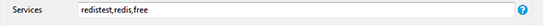
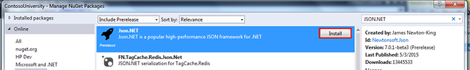
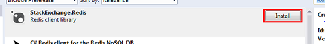
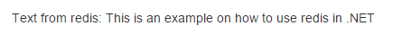

Windows, .NET, SQL Server, and IIS are either registered trademarks or trademarks of Microsoft Corporation in the United States and/or other countries.
Windows applications can be bound to services running in your deployment environment, such as Redis or MySQL. To do so, you need to have a NuGet package that can communicate with those services.
The following tutorial demonstrates how to add a Redis service to your .NET application.
Note: The NuGet packages used in this tutorial are for sample purposes only. Verify that packages are working for your application before deploying them to a production environment.

"redis-2.8": [
{
"name": "redistest",
"label": "redis-2.8",
"plan": "free",
"tags": [
],
"options": {
},
"credentials": {
"hostname": "0.0.0.0",
"host": ".0.0.0",
"port": 5001,
"password": "f4774d0b-2f8d-45da-ba3e-545f0cb9b35a",
"name": "01b32e35-248a-43d7-b90d-ab3f2611e644",
"uri": "redis:\/\/01b32e35-248a-43d7-b90d-ab3f2611e644:f4774d0b-2f8d-45da-ba3e-545f0cb9b35a@192.168.1.50:5001\/"
}
}


Text from Redis:
@{
try
{
string vcap = Environment.GetEnvironmentVariable("VCAP_SERVICES");
JObject services = Newtonsoft.Json.Linq.JObject.Parse(vcap);
string host = services["redis-2.8"].First["credentials"]["host"].ToString();
string port = services["redis-2.8"].First["credentials"]["port"].ToString();
string password = services["redis-2.8"].First["credentials"]["password"].ToString();
string conn = String.Format("{0}:{1},password={2}", host, port, password);
ConnectionMultiplexer redis = ConnectionMultiplexer.Connect(conn);
IDatabase db = redis.GetDatabase();
string input = "This is an example on how to use redis in .NET";
db.StringSet("mykey", input);
string output = db.StringGet("mykey");
@output;
}
catch (Exception e)
{
@e.ToString();
}
}
In the above code sample, the application does the following:
